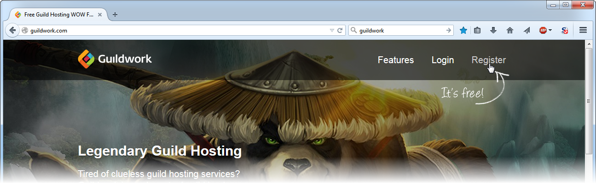

Guildwork Tutorial
Signing Up For Guildwork
Registering with SanelyInsane
Signing Up For Guildwork
Click
this link
to visit the Guildwork site.

To create an account, click "Register" on the top-right.
Enter your information and come up with a password, then click "Register".
Registering with SanelyInsane
In the search bar at the top of the page, type "sanelyinsane", and click the result that says "Site" to the right of the name (or click
this link
).
On our LS page, click the "Recruitment" link at the top.
Enter your character name, then click "Apply". Make sure you notify an officer in-game so that they can approve you.
Once you have been approved, you will receive a request. Click your name at the top-right of the page, and then click "Requests".
Click "Join" to complete the procedure. You will now have access to our
Mumble
server.